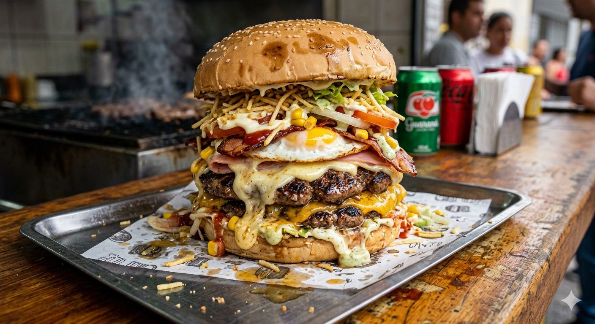
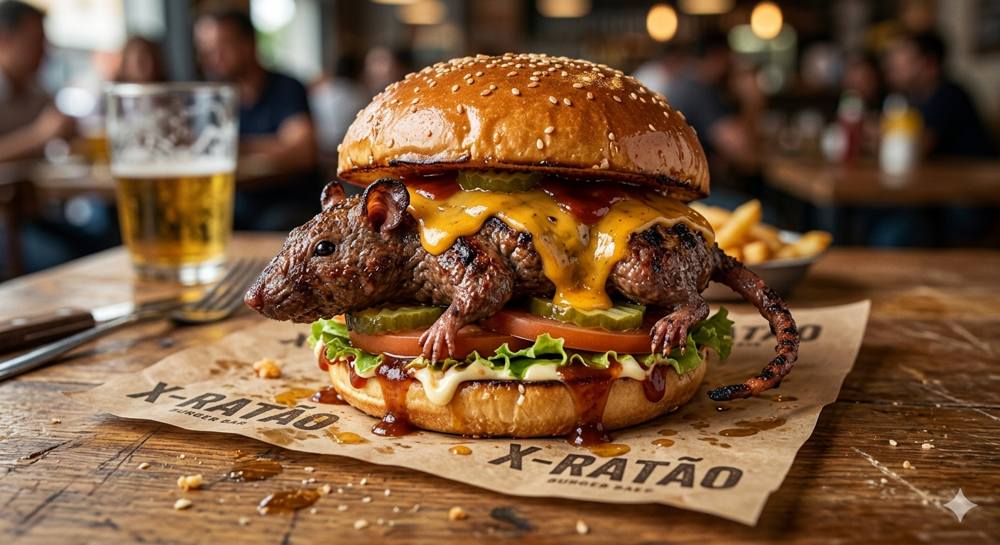
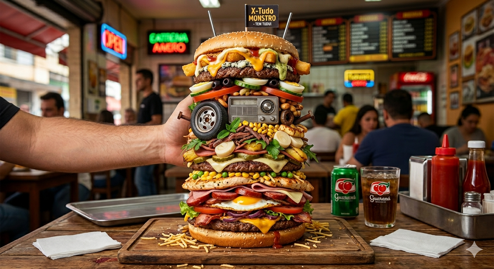
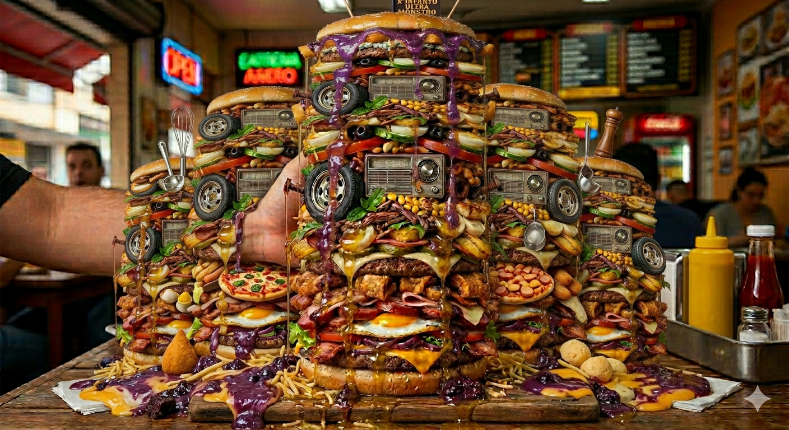
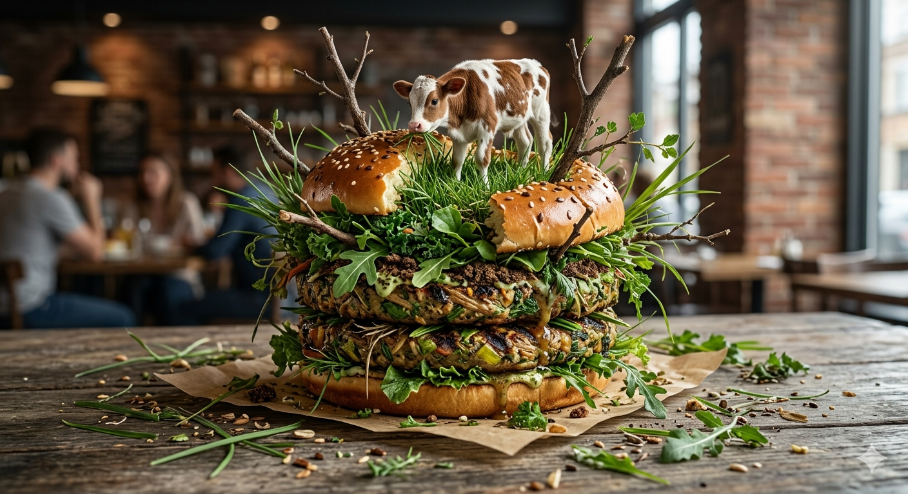
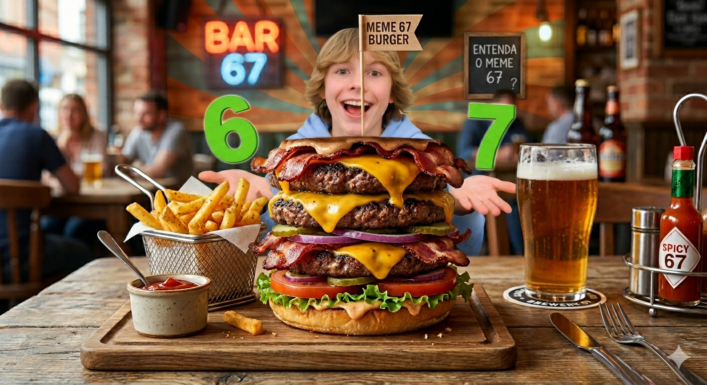
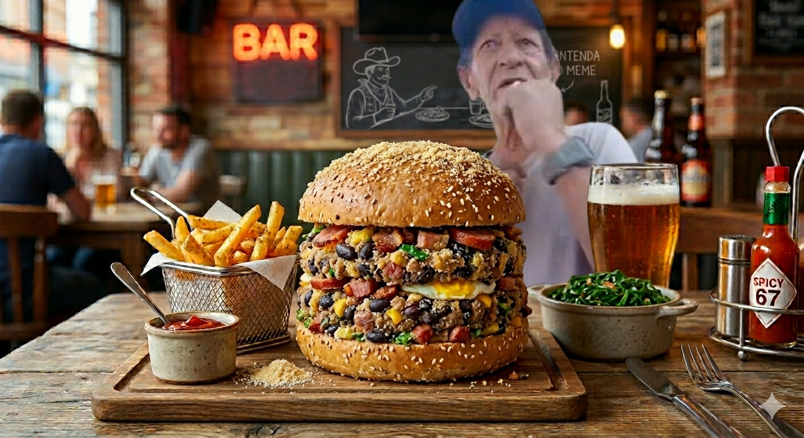
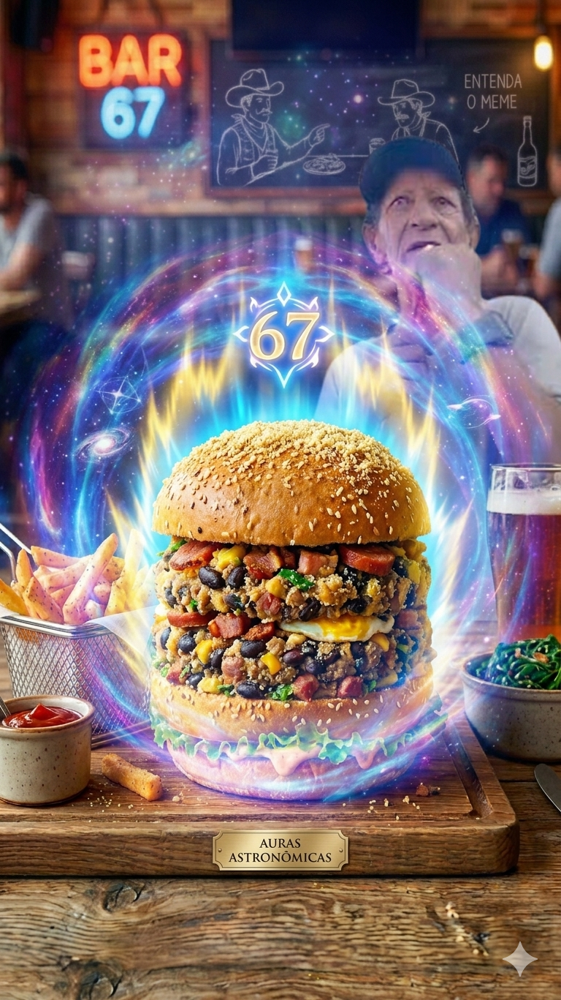

Infarto Burguer’s: lar dos monstros. X-Ratão, X-Tudo, X-Infarto e outras criações absurdas, sempre com muito recheio e zero economia. Aqui a fome não tem chance. Muito menos o Black Bun

Pão macio, hambúrguer suculento, presunto, queijo derretido, bacon crocante, ovo, salsicha, milho, ervilha, alface, tomate, batata palha e aquele molho especial que explode no sabor. É grande, pesado e feito pra acabar com qualquer fome.

Pão macio, recheio misterioso direto do esgoto premium, proteína secreta “capturada na madrugada” e um molho especial que ninguém tem coragem de perguntar o que é. Crocante, estranho e perigosamente viciante.

Pão de gergelim, múltiplos blends de carne bovina, frango, calabresa, bacon, presunto, muçarela, cheddar, ovo frito, batata palha, alface, tomate, cebola, picles, milho, ervilha, palmito, abacaxi, um pneu com calota, parafusos, pregos, um rádio retrô, antenas metálicas e uma bandeira de aviso.

Uma estrutura colossal que ocupa toda a mesa e toca o teto, composta por pães de gergelim gigantes, dezenas de blends de carne bovina, frango, calabresa, camadas infinitas de bacon e presunto, muçarela e cheddar derretidos, ovos fritos, batata palha, uma cascata de açaí com leite condensado e leite em pó, submerso em óleo de fritura escorrendo por todos os lados, recheado com itens não comestíveis como pneus de borracha, rádios retrô, parafusos, pregos e antenas, além de guarnições laterais de coxinhas, pães de queijo, pizzas inteiras, utensílios de cozinha (escumadeiras e batedores) e uma bandeira no topo avisando que o perigo é real.

É direto da natureza: pão macio, muito “mato selecionado”, uma vaga reservada no topo e aquele toque especial de terra premium pra fechar com estilo. Leve, natural e totalmente diferenciado.

Pão de hambúrguer com gergelim tostado, 67g de molho especial da casa, 67g de alface crespa fresca, 67g de rodelas de tomate maduro, 67g de cebola roxa fatiada, 67g de picles de pepino agridoce, três bifes de hambúrguer bovino de 67g cada (totalizando 201g de carne), três fatias de queijo cheddar derretido de 67g cada (totalizando 201g de queijo), e 67g de tiras de bacon crocante.

Feijão com Farinha.

Uma anomalia dimensional indestrutível e onipotente, forjada no núcleo de uma estrela moribunda com a massa condensada de 67 universos, estruturada em camadas infinitas de 67g de feijão de buraco negro sombrio, 67g de farinha de poeira estelar galáctica, 67g de bacon de supernova em matéria escura e 67g de puro plasma de Ki nível Deus, tudo isso vibrando em uma frequência tão violenta que rasga o tecido da realidade e distorce a luz ao seu redor, forçando as leis da física a se ajoelharem perante uma aura colossal que faz o próprio tempo parar, enquanto a entidade anciã mística ao fundo contempla, em silêncio absoluto, o nascimento do novo Deus Supremo em formato de lanche.